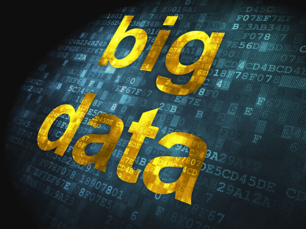

Big Data
Links:
description of big data:

Enormous information alludes to the huge, differing sets of data that develop at ever-expanding rates. It includes the volume of data, the speed or speed at which it is made and gathered, and the assortment or extent of the information focuses being secured. Huge information regularly originates from different sources and shows up in various formats.Big information is a blend of organized, semistructured and unstructured information gathered by associations that can be dug for data and utilized in AI ventures, prescient demonstrating and other progressed investigation applications.Systems that procedure and store large information have become a typical part of information the executives structures in associations.